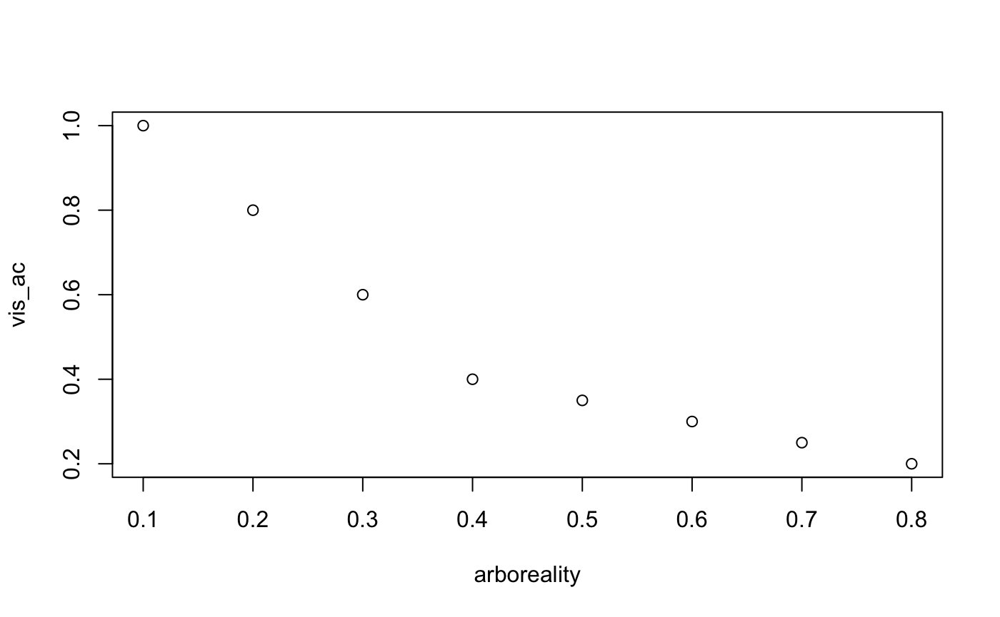
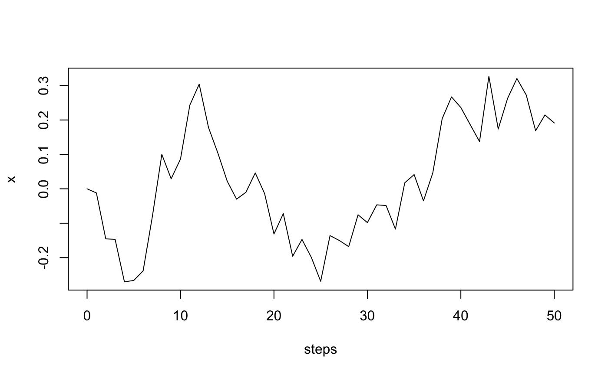
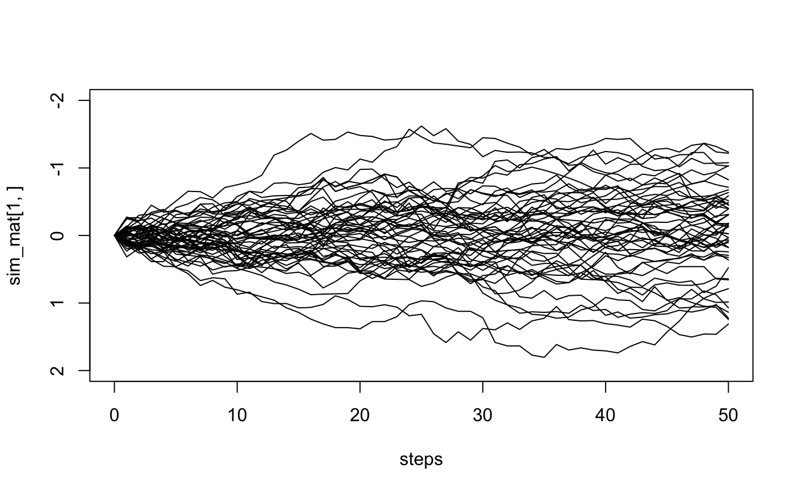
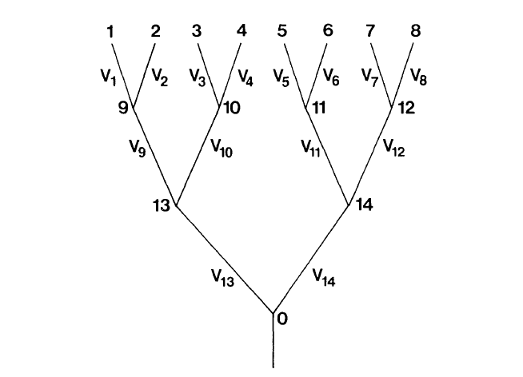
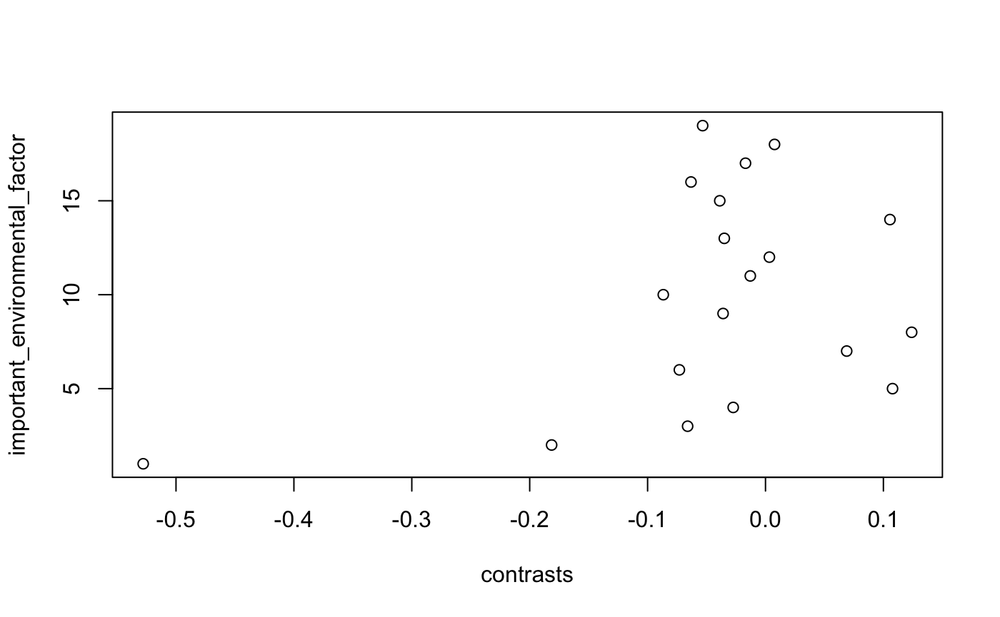

Extended Morphology Models
April Wright
7.18.19
CompMethods.RmdUsing trees to understand trait evolution
- What is a phylogeny?
- A model of evolutionary history
- Speciation and extinction
- Rates of evolution
- (Maybe) absolute time
- A model of evolutionary history
Using trees to understand trait evolution
- But there are also special challenges to using phylogenetic trees to study the evolutionary history of traits
Linear Regression
Let’s say that in your group of organisms, you believe that arboreality is associated with lower visual acuity.
Linear Regression
Let’s say that in your group of organisms, you believe that arboreality is associated with lower visual acuity.
arboreality <- c(.1, .2, .3, .4, .5, .6, .7, .8)
vis_ac <- c(1, .8, .6, .4, .35, .3, .25, .2)
plot(arboreality, vis_ac)
Linear Regression
What is wrong with what we have done?
arboreality <- c(.1, .2, .3, .4, .5, .6, .7, .8)
vis_ac <- c(1, .8, .6, .4, .35, .3, .25, .2)
plot(arboreality, vis_ac)
Linear Regression
What is wrong with what we have done?
arboreality <- c(.1, .2, .3, .4, .5, .6, .7, .8)
vis_ac <- c(1, .8, .6, .4, .35, .3, .25, .2)
plot(arboreality, vis_ac)These are not independent datapoints!
Linear Regression
What is the problem with what we’ve done?
Felsenstein Phylogenies and the Comparative Method, 1985
These are not independent datapoints!
Linear Regression
Does this mean we simply can’t make these comparsions?
No! But we must account for the effect of shared heritage.
Brownian Motion
Based on the random movement of particles in fluid
The idea is that sucessive movements are independent of each other.
Brownian Motion
Under this model, traits evolve due to a continuous random walk.
The difference (contrast) between the traits possessed by any two tips on the tree will be normally distributed. The mean of the normal will be 0, and the variance will be proportional to the time since common ancestor.
Brownian Motion
steps <- 0:50
var <- 0.01
x <- rnorm(n = length(steps) - 1, sd = sqrt(var))
x <- c(0, cumsum(x))
plot(steps, x, type = "line")## Warning in plot.xy(xy, type, ...): plot type 'line' will be truncated to
## first character
Brownian Motion
steps <- 0:50
var <- 0.01
n_sims <- 50
sim_mat <- matrix(0, n_sims, length(steps))
for (i in 1:n_sims) {
sim_mat[i, ] <- c(0, cumsum(rnorm(n = length(steps) - 1, sd = sqrt(var))))
}
plot(steps, sim_mat[1, ], type = "line", ylim = c(2, -2)) #when you scale var, you may need to adjust the axis!## Warning in plot.xy(xy, type, ...): plot type 'line' will be truncated to
## first characterfor (i in 1:n_sims) {
lines(steps, sim_mat[i, ])
}
Phylogenetically Independent Contrasts

1, 2, 3, 4 are not independent. But the difference between 1 & 2 is independent of the difference between 3 & 4.
Brownian Motion on a Tree
library(phytools)## Loading required package: ape## Loading required package: maps## t17 t18 t3 t4 t11
## -0.264792459 -0.173781946 -0.413265655 -0.207943395 -0.253240480
## t12 t1 t2 t5 t6
## -0.360026077 -0.216532009 0.025894595 0.130650957 -0.008919495
## t8 t19 t20 t15 t16
## -0.139843222 -0.101329888 -0.078297988 -0.159640098 -0.196444611
## t7 t9 t10 t13 t14
## 0.069387578 0.070220856 0.089750098 0.006900901 -0.028488026
## 21 22 23 24 25
## 0.000000000 -0.038575992 -0.094382514 -0.148173796 -0.229004410
## 26 27 28 29 30
## -0.275277294 -0.292753971 -0.261647848 -0.072709904 -0.078814242
## 31 32 33 34 35
## -0.045169370 -0.107796191 -0.145221692 -0.107492762 -0.186954201
## 36 37 38 39
## 0.058164202 0.037419156 0.036045086 0.002497652Brownian Motion on a Tree
x <- fastBM(tree, sig2 = var, internal = FALSE)
contrasts <- pic(x, tree, scaled=FALSE)
contrasts## 21 22 23 24 25
## -0.527833858 -0.181408083 -0.066054913 -0.027386182 0.107757008
## 26 27 28 29 30
## -0.073053338 0.068870061 0.123975861 -0.035974215 -0.086696879
## 31 32 33 34 35
## -0.012884844 0.003306994 -0.034941284 0.105577509 -0.038794335
## 36 37 38 39
## -0.063180163 -0.016952661 0.007659031 -0.053301550Brownian Motion on a Tree
important_environmental_factor <- seq(from = 1, to = 19, by = 1)
plot(contrasts, important_environmental_factor)
Ancestral State Reconstruction
Phylogenetic independent contrasts assume we can estimate the value of the trait possessed by an ancestor through Brownian motion
Ancestral State Reconstruction
- But we’ve already seen ancestral state estimation
- Recall the AND/OR rule discussions from day one
- Conditional probabilities - What is the likelihood of a state at the tips given the state at the nodes
- Ancestral state reconstruction allows us to apply this logic to external traits
- Recall the AND/OR rule discussions from day one